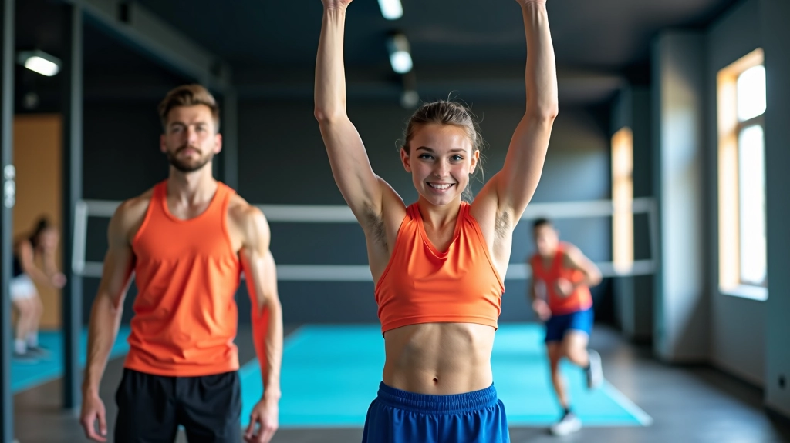
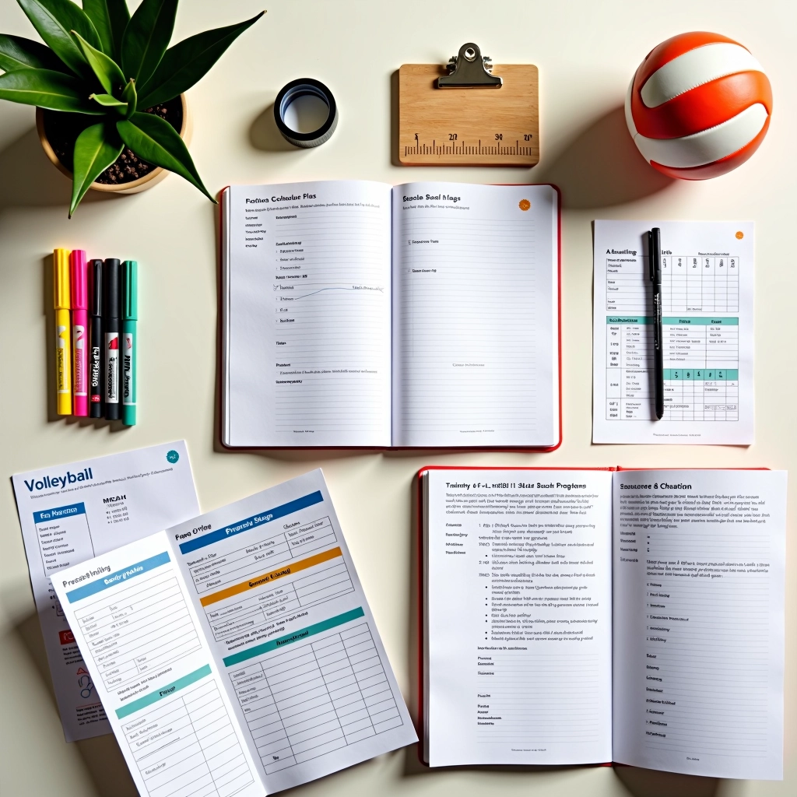
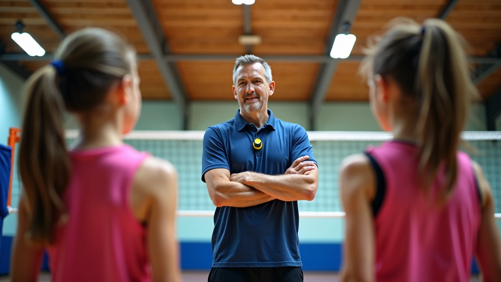
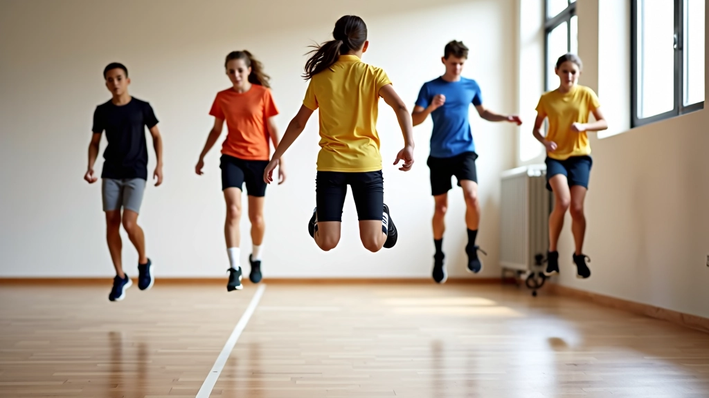
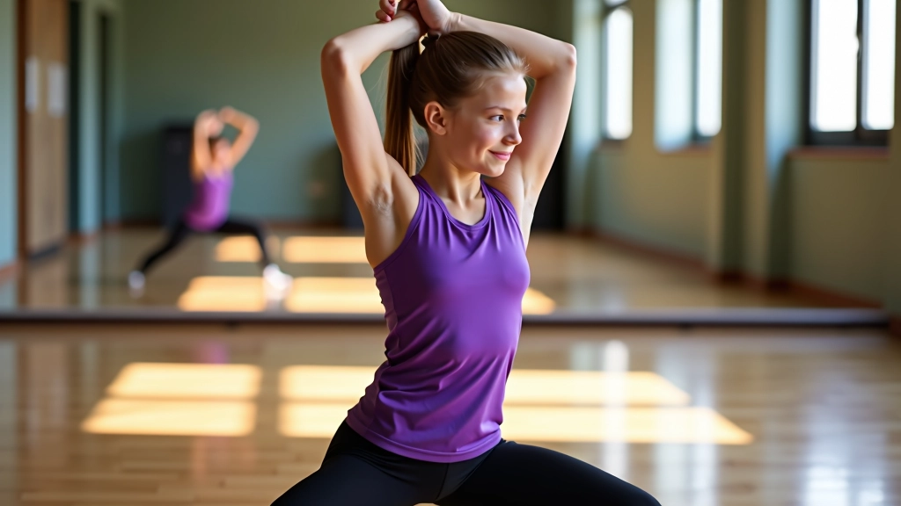
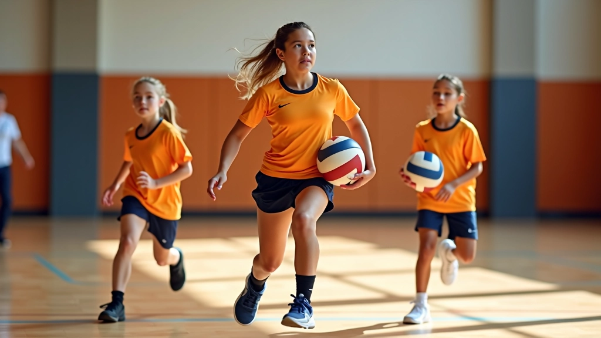
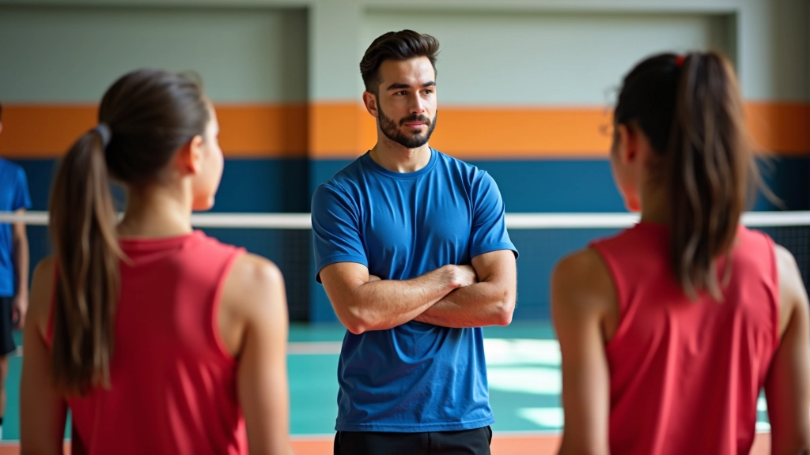

الخطوات الأساسية لإتقان تقنية التمرير
تعلم كيفية تحسين دقة التمرير من خلال تقنيات صحيحة وتدريبات متكررة تناسب جميع مستويات اللاعبين الناشئين.
تطوير القوة والسرعة والمرونة والتحمل من خلال تدريبات متخصصة ومنظمة


لا يمكنك أن تصبح لاعباً جيداً في الكرة الطائرة بمهارات تقنية وحسب. اللياقة البدنية هي الأساس الذي يرفع مستوى أدائك. القوة العضلية، السرعة، والمرونة — كل هذا يحدد مدى قدرتك على القفز العالي والحركة السريعة والتحمل طوال المباراة.
برنامج اللياقة البدنية المتخصص يركز على ثلاثة محاور أساسية: تطوير القوة الانفجارية التي تساعدك على القفز أعلى، وتحسين السرعة الجانبية والحركات الخاطفة، وبناء قدرة التحمل لتظل بكامل طاقتك حتى نهاية المباراة.
نحن نعمل مع لاعبين من أعمار مختلفة — من 8 سنوات إلى 17 سنة — وكل مرحلة عمرية تحتاج تدريباً خاصاً. الصغار يحتاجون تطويراً أساسياً للتنسيق والتوازن، بينما المراهقون يركزون على بناء القوة الحقيقية والسرعة.

القفز العالي هو ما يميز لاعب الكرة الطائرة الجيد. تمارين Plyometrics — وهي تمارين الحركة السريعة القوية — تساعدك على تطوير القوة الانفجارية. نبدأ بتمارين بسيطة مثل الوثب العمودي من مكان واحد، ثم ننتقل إلى تمارين أكثر تعقيداً.
من الأمور المهمة جداً أن نركز على الهبوط الآمن. الكثير من الإصابات تحدث عند الهبوط غير الصحيح. نعلم اللاعبين كيف يهبطون بشكل آمن — ركبتان منحنيتان، قدمان متوازيتان — هذا يقلل الإصابات بشكل كبير. التدريب ينقسم إلى 3 أسابيع من التمارين الأساسية، ثم أسبوعين من تمارين أكثر تقدماً.

لا تركز فقط على تمارين الساقين. القوة الأساسية — عضلات البطن والظهر — مهمة جداً للتوازن والثبات أثناء القفز. عندما تقوي قلبك، تصبح أكثر استقراراً في الهواء.

المرونة ليست رفاهية — هي ضرورة. لاعب الكرة الطائرة يحتاج حركة كاملة في الكتفين والوركين. تمارين الإطالة الديناميكية — حيث تتحرك أثناء الإطالة — أفضل من الإطالات الثابتة. نركز على إطالة الفخذين والأوتار والكتفين.
في كل جلسة تدريب نبدأ بـ 10 دقائق من الإحماء الديناميكي — دوران الذراعين، حركات الورك، تمارين التنسيق. ثم بعد التدريب مباشرة، نقضي 5-10 دقائق في الإطالة الثابتة. هذا يقلل الألم اليوم التالي ويحافظ على حركتك مرنة.
اللاعب الذي يتعب بعد 20 دقيقة من المباراة لن يكون فعالاً. تمارين القدرة على التحمل تعني تكرار الحركات السريعة بدون أن ينخفض مستوى أدائك. نستخدم تدريباً يسمى "Interval Training" — فترات قصيرة من المجهود العالي متبوعة بفترات راحة قصيرة.
مثال: 30 ثانية حركة جانبية سريعة متواصلة، ثم 20 ثانية راحة، ثم تكرار 8-10 مرات. هذا يدرب جسمك على الاستمرار حتى عندما تكون متعباً. كرة الطائرة تتطلب انفجارات قصيرة من السرعة والقوة، لا سباق ماراثون. لذا تدريب الفترات يطابق احتياجات اللعبة بالضبط.
السرعة الجانبية مهمة جداً — الحركات الجانبية السريعة لالتقاط الكرات. نركز على تمارين تحسين السرعة الجانبية: الركض الجانبي السريع، الوثب الجانبي، تغيير الاتجاه بسرعة. 3 جلسات في الأسبوع كافية — كل جلسة 45-60 دقيقة.

لا يوجد برنامج واحد يناسب الجميع. لكن الهيكل الأساسي يشبه هذا:
تمارين القوة والقفز — تمارين الأرجل الأساسية، تمارين Plyometrics، تقوية القلب.
تدريب السرعة والتحمل — interval training، حركات جانبية سريعة، تغيير الاتجاه.
جلسة تقنية خفيفة مع التركيز على المرونة والإطالة والاسترخاء.
راحة كاملة أو نشاط خفيف جداً. الاسترجاع والراحة مهمة مثل التدريب نفسه.
هل تريد أن تبدأ برنامجاً للياقة البدنية بنفسك؟ إليك ما ينجح:
برنامج اللياقة البدنية للاعبي الكرة الطائرة ليس معقداً، لكنه يتطلب التزاماً. ثلاثة أشهر من التدريب المنتظم والجيد ستشعر بفرق حقيقي في قوتك وسرعتك. القفز سيصبح أعلى، الحركات ستكون أسرع، والتحمل سيزداد. كل هذا يترجم إلى أداء أفضل في المباراة.
لا تقارن نفسك بالآخرين. كل لاعب يبدأ من مكان مختلف. ركز على تحسين نفسك أسبوع تلو الآخر. هذا هو المهم حقاً.
هذا المحتوى مخصص للأغراض التعليمية والإرشادية فقط. قبل البدء بأي برنامج تدريب جديد، خاصة للناشئين، يُنصح بشدة استشارة مدرب متخصص أو طبيب. الإصابات قد تحدث إذا تم التدريب بطريقة غير صحيحة. كل لاعب لديه احتياجات مختلفة حسب سنه وحالته البدنية. المدرب المتخصص سيساعدك على تطوير برنامج مناسب لك شخصياً.
مقالات أخرى من برنامج تطوير الناشئين في الكرة الطائرة
تعلم كيفية تحسين دقة التمرير من خلال تقنيات صحيحة وتدريبات متكررة تناسب جميع مستويات اللاعبين الناشئين.

اكتشف الأخطاء الشائعة في الإرسال والطرق الفعالة لتصحيحها وزيادة قوة الإرسال مع الحفاظ على الدقة.

تعلم الخطط التكتيكية الأساسية والمتقدمة لتحسين قدرات الفريق على القراءة والاستجابة السريعة.